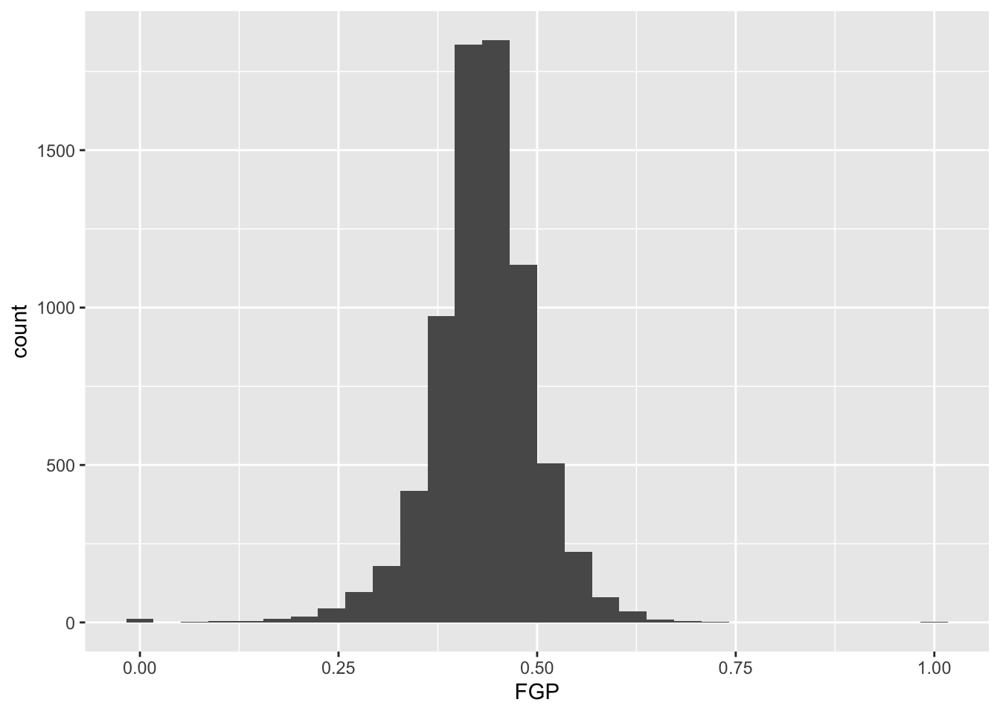
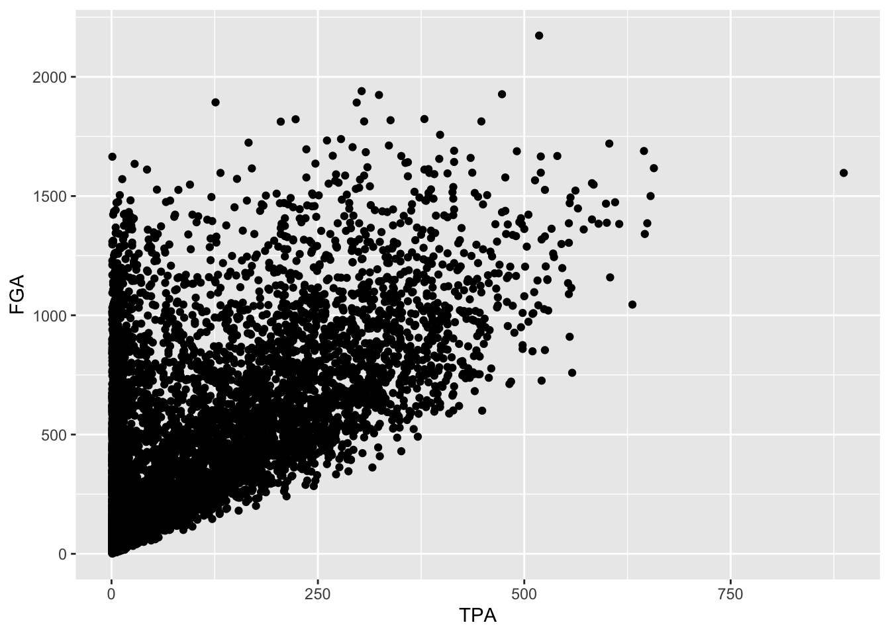
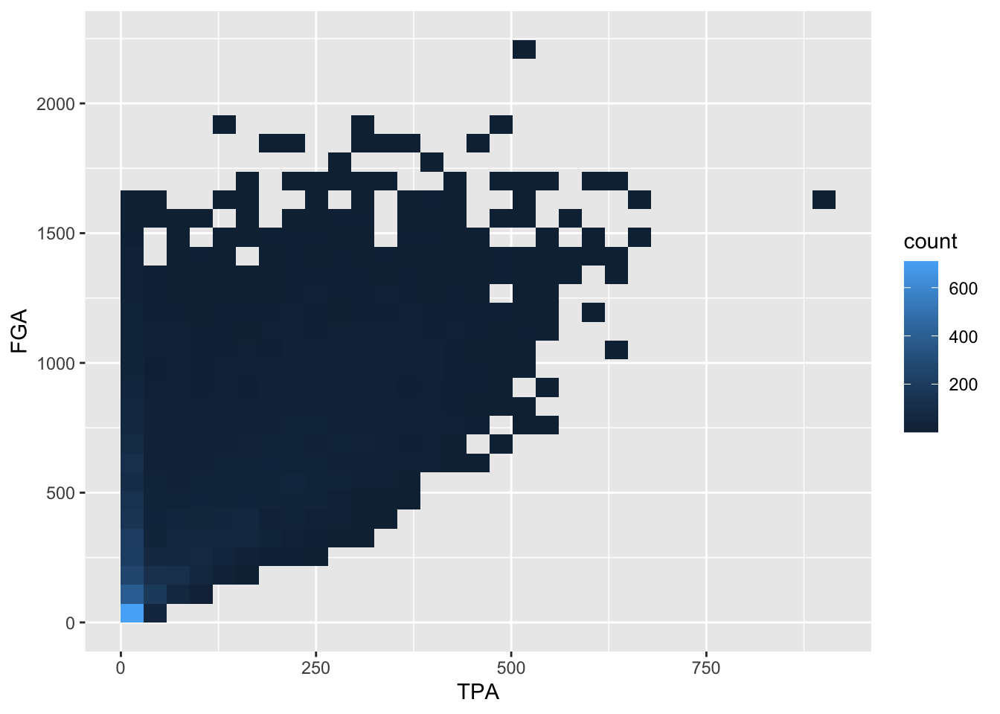

Lecture 2: The grammar of graphics and filtering data
We’re going to pick up right where we left off yesterday in Problem Set 1, where you wrote a script to create
a tbl containing several shooting statistics for NBA
players between the 1996-97 season and the 2015-16 season. Your script
could look something like what is the code block below, and for reasons
that will become clear shortly, we are going to call our tbl
raw_shooting (remember: writing code in script files is
good practice!)
library(tidyverse)
# Read in data
raw_shooting <- read_csv(file = "data/nba_shooting.csv")## Rows: 7447 Columns: 8
## ── Column specification ────────────────────────────────────────────────────────
## Delimiter: ","
## chr (1): PLAYER
## dbl (7): SEASON, FGM, FGA, TPM, TPA, FTM, FTA
##
## ℹ Use `spec()` to retrieve the full column specification for this data.
## ℹ Specify the column types or set `show_col_types = FALSE` to quiet this message.# Create new columns
raw_shooting <-
mutate(raw_shooting,
FGP = FGM / FGA,
TPP = TPM / TPA,
FTP = FTM / FTA,
eFGP = (FGM + 0.5 * TPM) / (FGA),
PTS = FTM + 2 * FGM + TPM,
TSP = PTS/(2 * (FGA + 0.44 * FTA)))
# Sort by the TSP in descending order
raw_shooting <- arrange(raw_shooting, desc(TSP))As we learned at the end of Lecture 1,
rather than repeatedly referring to our tbl, we can use the
pipe %>% to chain together our operations for a much
cleaner chunk of code:
# First read in the data, assigning pipeline to raw_shooting
raw_shooting <- read_csv(file = "data/nba_shooting.csv") %>%
# Next create the new columns
mutate(FGP = FGM / FGA,
TPP = TPM / TPA,
FTP = FTM / FTA,
eFGP = (FGM + 0.5 * TPM) / (FGA),
PTS = FTM + 2 * FGM + TPM,
TSP = PTS / (2 * (FGA + 0.44 * FTA))) %>%
# And finally sort by TSP
arrange(desc(TSP)) Introduction to ggplot2
We will use visualizations to answer some questions about the data. Specifically, we will study the distribution of the individual columns as well as try to understand the relationship between pairs of variables. For instance, are players attempting and making more three point shots now than they did 10 years ago?
Throughout the week, we will be using the popular ggplot2 package
(again created by Hadley Wickham and a member of the
tidyverse) for all of our data visualizations. The
gg stands for the grammar of graphics, an
intuitive framework for data visualization. Given a dataset, such as
raw_shooting, we want to map the columns to certain
aesthetics of a visualization, such as the x-axis,
y-axis, size, color, etc. Then a geometric object is used to represent
the aesthetics visually such as a barchart or scatterplot. This
framework separates the process of visualization into different
components: data, aesthetic mappings, and geometric objects. These
components are then added together (or layered) to
produce the final graph. The ggplot2 package is the most
popular implementation of the grammar of graphics and
is relatively easy to use.
As you saw in Prof. Wyner’s lectures, histograms are a powerful way
to describe a single dataset. Let’s start with making a histogram of
field-goal percentage (FGP). To do so with ggplot2, we
start by telling R which tbl we want to use as
the data for the plot. This is done using the ggplot()
function:
ggplot(data = raw_shooting)
As you can see, nothing is displayed! That’s because we’ve just initialized the dataset to be used for creating the plot. Next, we need to map variables/columns from the data to aesthetics/properties of the plot. Examples include:
x: the variable that will be on the x-axisy: the variable that will be on the y-axiscolor: the variable that categorizes data by colorshape: the variable that categorizes data by shape
For the histogram, we map FGP to the x aesthetic with
the aes() functions, displaying values of FGP along the
x-axis:
ggplot(data = raw_shooting, aes(x = FGP))
Now we can see an axis for FGP, but still no histogram! That’s
because we need to add the geometric layer of the
histogram to the plot. The various geometric objects available in
ggplot2 are referred to as geoms, and these
ultimately determine the type of play that will be created. Examples
include:
geom_point(): creates a scatterplotgeom_histogram(): creates a histogramgeom_line(): creates a linegeom_boxplot(): creates a boxplot
To display the FGP histogram, we will simply add the
geom_histogram() layer to the plot using the +
operator:
ggplot(data = raw_shooting, aes(x = FGP)) +
geom_histogram()## `stat_bin()` using `bins = 30`. Pick better value with `binwidth`.
And of course, we can equivalently generate the same figure by
piping our dataset into the ggplot
function. The remaining examples will use the pipe operator
%>% for the remainder of this week, emphasizing how you
can manipulate the tbl with various other functions prior
to displaying the data:
raw_shooting %>%
ggplot(aes(x = FGP)) +
geom_histogram()## `stat_bin()` using `bins = 30`. Pick better value with `binwidth`.
Each geom has it various attributes that can be modified
whether by mapping variables with aes or global
settings that affects the final displayed plot. A common problem faced
with histograms is determining the width of the bins or number of bins -
how much smoothing do we want of the data? You might have noticed that
by default geom_histogram is using 30 bins and prints out a
message for us about this decision. We can easily modify the number of
bins in the geom_histogram function using the
bins argument:
raw_shooting %>%
ggplot(aes(x = FGP)) +
geom_histogram(bins = 50)
Or we directly specify the width of the bins reflecting the range of
FGP included in each bin using binwidth:
raw_shooting %>%
ggplot(aes(x = FGP)) +
geom_histogram(binwidth = 0.05)
Now you should spend time making histograms of FTP and TPP, and other variables created in code above. Discuss the differences with others.
Filtering
By this point, it should be clear that there are a number of rather curious features in our dataset. For instance, there seem to be several players who have never made a field goal but have made every one of their free throw attempts. As it turns out, we have several players who have attempted fewer than 5 field goals in a single season. We’d like to remove all of the players who have not attempted a considerable number of field goal attempts and three point attempts in order to understand how the rate and efficiency of three point shots has changed over time.
The filter() function is used to pull out subsets of
observations that satisfy some logical condition like
FGA > 100 or FGA > 100 and
FTA > 50. To make such comparisons in R, we have the
following operators available at our disposal:
==for “equal to”!=for “not equal to”<and<=for “less than” and “less than or equal to”>and>=for “greater than” and “greater than or equal to”&,|,!for “AND” and “OR” and “NOT”
The code below filter out all of the players with at least 100 field goals in a single season.
raw_shooting %>%
filter(FGA > 100)## # A tibble: 6,295 × 14
## PLAYER SEASON FGM FGA TPM TPA FTM FTA FGP TPP FTP eFGP
## <chr> <dbl> <dbl> <dbl> <dbl> <dbl> <dbl> <dbl> <dbl> <dbl> <dbl> <dbl>
## 1 Chris Wil… 2013 110 153 0 1 39 58 0.719 0 0.672 0.719
## 2 Tyson Cha… 2012 241 355 0 2 217 315 0.679 0 0.689 0.679
## 3 Kyle Korv… 2015 292 600 221 449 106 118 0.487 0.492 0.898 0.671
## 4 Steve Nov… 2012 161 337 133 282 22 26 0.478 0.472 0.846 0.675
## 5 Chris And… 2014 177 275 3 12 120 169 0.644 0.25 0.710 0.649
## 6 Jeremy Ev… 2011 76 115 0 1 26 37 0.661 0 0.703 0.661
## 7 Carlos Ro… 2001 75 110 0 1 29 52 0.682 0 0.558 0.682
## 8 Mason Plu… 2014 199 302 0 3 122 195 0.659 0 0.626 0.659
## 9 Stephen C… 2016 805 1597 402 887 363 400 0.504 0.453 0.908 0.630
## 10 Brent Bar… 2004 215 427 114 252 91 110 0.504 0.452 0.827 0.637
## # … with 6,285 more rows, and 2 more variables: PTS <dbl>, TSP <dbl>When we run this code, you’ll notice that R prints out a
tbl with 6,295 rows.
We can also filter on more complicated conditions constructed using
the AND, OR, and NOT operators: &, |, and
!. For instance, to filter observations with at least 100
field goal attempts OR 50 three point attempts, we would do
raw_shooting %>%
filter(FGA >= 100 | TPA >= 50)## # A tibble: 6,328 × 14
## PLAYER SEASON FGM FGA TPM TPA FTM FTA FGP TPP FTP eFGP
## <chr> <dbl> <dbl> <dbl> <dbl> <dbl> <dbl> <dbl> <dbl> <dbl> <dbl> <dbl>
## 1 Chris Wil… 2013 110 153 0 1 39 58 0.719 0 0.672 0.719
## 2 Tyson Cha… 2012 241 355 0 2 217 315 0.679 0 0.689 0.679
## 3 Kyle Korv… 2015 292 600 221 449 106 118 0.487 0.492 0.898 0.671
## 4 Steve Nov… 2012 161 337 133 282 22 26 0.478 0.472 0.846 0.675
## 5 Chris And… 2014 177 275 3 12 120 169 0.644 0.25 0.710 0.649
## 6 Jeremy Ev… 2011 76 115 0 1 26 37 0.661 0 0.703 0.661
## 7 Carlos Ro… 2001 75 110 0 1 29 52 0.682 0 0.558 0.682
## 8 Brian Car… 2011 43 100 42 87 17 18 0.43 0.483 0.944 0.64
## 9 Mason Plu… 2014 199 302 0 3 122 195 0.659 0 0.626 0.659
## 10 Stephen C… 2016 805 1597 402 887 363 400 0.504 0.453 0.908 0.630
## # … with 6,318 more rows, and 2 more variables: PTS <dbl>, TSP <dbl>We may combine these constraints by enclosing them in parentheses.
raw_shooting %>%
filter((FGA >= 100 & TPA >= 50) | (FGP >= 0.45 & FGP <= 0.5))## # A tibble: 4,837 × 14
## PLAYER SEASON FGM FGA TPM TPA FTM FTA FGP TPP FTP eFGP
## <chr> <dbl> <dbl> <dbl> <dbl> <dbl> <dbl> <dbl> <dbl> <dbl> <dbl> <dbl>
## 1 Keith Bog… 2014 3 6 3 6 3 3 0.5 0.5 1 0.75
## 2 Kyle Korv… 2015 292 600 221 449 106 118 0.487 0.492 0.898 0.671
## 3 Aleksanda… 1997 8 16 5 7 4 5 0.5 0.714 0.8 0.656
## 4 Steve Nov… 2012 161 337 133 282 22 26 0.478 0.472 0.846 0.675
## 5 Brian Car… 2011 43 100 42 87 17 18 0.43 0.483 0.944 0.64
## 6 Stephen C… 2016 805 1597 402 887 363 400 0.504 0.453 0.908 0.630
## 7 Brent Bar… 2004 215 427 114 252 91 110 0.504 0.452 0.827 0.637
## 8 Manu Gino… 2012 150 285 52 126 88 101 0.526 0.413 0.871 0.618
## 9 Steve Kerr 1997 249 467 110 237 54 67 0.533 0.464 0.806 0.651
## 10 Brent Bar… 2007 202 425 128 287 103 117 0.475 0.446 0.880 0.626
## # … with 4,827 more rows, and 2 more variables: PTS <dbl>, TSP <dbl>What if we wanted to pull out the observations corresponding to the
2015-16 and 2014-15 season? We could do something like
filter(raw_shooting, (SEASON == 2016) | (SEASON == 2015)),
which would be perfectly fine. However, what if we wanted data from
1998-99, 2011-12, and 2015-16? Typing a lot of expressions like
SEASON == ... would be rather tedious. The
%in% operator lets us avoid this tedium:
raw_shooting %>%
filter(SEASON %in% c(1999, 2012, 2016))## # A tibble: 1,150 × 14
## PLAYER SEASON FGM FGA TPM TPA FTM FTA FGP TPP FTP eFGP
## <chr> <dbl> <dbl> <dbl> <dbl> <dbl> <dbl> <dbl> <dbl> <dbl> <dbl> <dbl>
## 1 Tyson Whe… 1999 1 1 1 1 1 2 1 1 0.5 1.5
## 2 Tyson Cha… 2012 241 355 0 2 217 315 0.679 0 0.689 0.679
## 3 Jorge Gut… 2016 6 11 0 2 10 11 0.545 0 0.909 0.545
## 4 Steve Nov… 2012 161 337 133 282 22 26 0.478 0.472 0.846 0.675
## 5 Sam Jacob… 1999 3 5 0 1 2 2 0.6 0 1 0.6
## 6 Stephen C… 2016 805 1597 402 887 363 400 0.504 0.453 0.908 0.630
## 7 Manu Gino… 2012 150 285 52 126 88 101 0.526 0.413 0.871 0.618
## 8 James Har… 2012 309 629 114 292 312 369 0.491 0.390 0.846 0.582
## 9 Steve Nov… 2016 8 18 7 15 1 1 0.444 0.467 1 0.639
## 10 Brad Mill… 1999 78 138 1 2 81 102 0.565 0.5 0.794 0.569
## # … with 1,140 more rows, and 2 more variables: PTS <dbl>, TSP <dbl>We could also filter out data from the two lockout-shortened seasons,
1998-99 and 2011-12 using a combination of the NOT !
operator and %in%.
raw_shooting %>%
filter(!SEASON %in% c(1999, 2012))## # A tibble: 6,721 × 14
## PLAYER SEASON FGM FGA TPM TPA FTM FTA FGP TPP FTP eFGP
## <chr> <dbl> <dbl> <dbl> <dbl> <dbl> <dbl> <dbl> <dbl> <dbl> <dbl> <dbl>
## 1 Dajuan Wa… 2007 1 1 1 1 1 2 1 1 0.5 1.5
## 2 Amir John… 2006 7 10 2 3 4 4 0.7 0.667 1 0.8
## 3 Keith Bog… 2014 3 6 3 6 3 3 0.5 0.5 1 0.75
## 4 Steve Nov… 2011 35 67 26 46 8 8 0.522 0.565 1 0.716
## 5 Chris Cra… 2003 8 13 1 3 7 8 0.615 0.333 0.875 0.654
## 6 Chris Wil… 2013 110 153 0 1 39 58 0.719 0 0.672 0.719
## 7 Maceo Bas… 2007 49 76 3 7 37 47 0.645 0.429 0.787 0.664
## 8 Kyle Korv… 2015 292 600 221 449 106 118 0.487 0.492 0.898 0.671
## 9 Jorge Gut… 2016 6 11 0 2 10 11 0.545 0 0.909 0.545
## 10 Aleksanda… 1997 8 16 5 7 4 5 0.5 0.714 0.8 0.656
## # … with 6,711 more rows, and 2 more variables: PTS <dbl>, TSP <dbl>For the remainder of this module, we will focus on the non-lockout
seasons (ie !SEASON %in% c(1999, 2012, 2016)) but we still
need to determine a cutoff for FGA and TPA. Let’s start by making
histograms of the two variables to see their individual distributions,
and rather than creating a new temporary tbl we’ll take
advantage of the %>%. First for FGA:
raw_shooting %>%
filter(!SEASON %in% c(1999, 2012)) %>%
ggplot(aes(x = FGA)) +
geom_histogram(binwidth = 50)
And now for TPA:
raw_shooting %>%
filter(!SEASON %in% c(1999, 2012)) %>%
ggplot(aes(x = TPA)) +
geom_histogram(binwidth = 25)
It might not make sense however to make a cutoff for FGA and TPA without considering their relationship.
Bivariate plots for continuous data
We can proceed to view the joint distribution of FGA
and TPA, the relationship between the two variables, by displaying a
scatterplot of the data. Obviously, as TPA increases the FGA will
increase (since FGA is the sum of TPA and number of two-point attempts).
We create a scatterplot by mapping multiple variables to x
and y, and use geom_point to display the
desired geometric object of points instead of
geom_histogram from before.
raw_shooting %>%
filter(!SEASON %in% c(1999, 2012)) %>%
ggplot(aes(x = TPA, y = FGA)) +
geom_point()
Immediately, we notice a few things about the figure. First, we see the clear relationship between TPA and FGA - where where TPA provides the lower threshold on FGA (remember why is this expected). We also see what appears to be a group of points with a smaller number of three-point attempts displaying a range in values for FGA, while a main block of points shows an clear increasing relationship. A major drawback of this scatterplot is its inability to show the relative density of points. For instance, all we see is a solid black mass for the lower range of values for both TPA and FGA - making it hard to determine where an appropriate cutoff should be made.
One way to address this is to use alpha-blending to change
the transparency of each point. When there are many points plotted in
the same region, that region will appear darker. Just like
binwidth or bins for
geom_histogram, geom_point has settings we can
change such as the alpha setting in this case which ranges
from 0 (completely transparent) to 1 (solid and opaque, the
default).
raw_shooting %>%
filter(!SEASON %in% c(1999, 2012)) %>%
ggplot(aes(x = TPA, y = FGA)) +
geom_point(alpha = 0.1)
Now we have a much better idea of where the majority of points are,
with a clear group of players displaying a smaller number of TPA.
Another type of plot commonly used in this situation is a
heatmap which you can thnk of as a two-dimensional
histogram. To form a heatmap, you start by dividing the coordinate plane
into many evenly-sized two-dimensional bins and then count the number of
points within each bin. You then color the bin according to the count.
While you can conceptually make the bins any shape you want, there are
two popular conventions: rectangular binning and hexagonal binning. For
this plot, we will focus on rectangular binning, using the
geom_bin2d() function.
raw_shooting %>%
filter(!SEASON %in% c(1999, 2012)) %>%
ggplot(aes(x = TPA, y = FGA)) +
geom_bin2d()
Now we have a color scale that has appeared to tell us the number of points in each bin. Just like histograms, we can increase the number of bins to get a much more high-resolution view of our data.
raw_shooting %>%
filter(!SEASON %in% c(1999, 2012)) %>%
ggplot(aes(x = TPA, y = FGA)) +
geom_bin2d(bins = 100)
In this example, using geom_point with lower values for
alpha provides a clear interpretation for where to make the
cutoff. Given the histograms we previously made for each variable as
well, let’s use a cutoff of TPA > 50 and
FGA > 150. We can create the scatterplot as before but,
to demonstrate a convenient feature of ggplot2, we’ll now
assign the plot to a variable named fga_tpa_plot,
fga_tpa_plot <- raw_shooting %>%
filter(!SEASON %in% c(1999, 2012)) %>%
ggplot(aes(x = TPA, y = FGA)) +
geom_point(alpha = 0.1)Notice how this code runs without displaying the plot. To display it
we simplyrun fga_tpa_plot in the console and the plot
appear,
fga_tpa_plot
Now we’re going to annotate this plot with the cutoffs we’ve
determined. To do so, we’re going to add a vertical line to provide the
cutoff for the minimum value of TPA, and a horizontal line for the
minimum value of FGA. Both of these can be accomplished using the
geoms geom_vline and geom_hline
where we specify for each the values for the intercepts to draw the
lines at. Since we’ve stored the plot in fga_tpa_plot, we
can add these layers with the + operator to
fga_tpa_plot directly:
fga_tpa_plot +
# Add TPA cutoff
geom_vline(xintercept = 50) +
# Add FGA cutoff
geom_hline(yintercept = 150)
This provides us with a good indication of what we’re cutting off,
but we should distinguish these lines separately from the points more.
Since these are both geoms with their own set of
attributes, we’ll change the color and make the line type to be
dashed,
fga_tpa_plot +
# Add TPA cutoff
geom_vline(xintercept = 50, color = "red", linetype = "dashed") +
# Add FGA cutoff
geom_hline(yintercept = 150, color = "red", linetype = "dashed")
Although ggplot2 automatically provides axis labels
based on the variables we’ve mapped to the aesthetics in
aes, we really need text describing what is shown in the
plot. The easiest way to do this, is by adding a label layer with the
labs() function. Using labs, you can provide
it the same arguments as those inside aes as well as other
parts of the plot to label such as the title, subtitle, and caption. We
add appropriate labels to the plot above, with better descriptions for
the axes, as well as an informative subtitle regarding the red-dashed
lines:
fga_tpa_plot +
# Add TPA cutoff
geom_vline(xintercept = 50, color = "red", linetype = "dashed") +
# Add FGA cutoff
geom_hline(yintercept = 150, color = "red", linetype = "dashed") +
# Add appropriate labels:
labs(x = "Number of three point attempts (TPA)",
y = "Number of field goal attempts (FGA)",
title = "Scatterplot of FGA and TPA (excluding lockout seasons 1999 and 2012)",
subtitle = "Red-dashed lines indicate cutoffs for TPA > 50 and FGA > 150",
caption = "Created by INSERT YOUR NAME HERE")
As a reminder, the code chunk above is equivalent to running the entire pipeline of code without creating any temporary objects, although not recommended…
read_csv(file = "data/nba_shooting.csv") %>%
filter(!SEASON %in% c(1999, 2012)) %>%
ggplot(aes(x = TPA, y = FGA)) +
geom_point(alpha = 0.1) +
geom_vline(xintercept = 50, color = "red", linetype = "dashed") +
geom_hline(yintercept = 150, color = "red", linetype = "dashed") +
labs(x = "Number of three point attempts (TPA)",
y = "Number of field goal attempts (FGA)",
title = "Scatterplot of FGA and TPA (excluding lockout seasons 1999 and 2012)",
subtitle = "Red-dashed lines indicate cutoffs for TPA > 50 and FGA > 150",
caption = "Created by INSERT YOUR NAME HERE")
Saving our work
For the next lecture we will focus on
the dataset of players who attempted at least 150 field goals and 50
three pointers in the non-lockout seasons. We’ll make this
clean dataset using the filter() function
separating each condition with commas, and refer to the resulting
dataset as nba_shooting. Finally, we’ll add a
mutate() line to create the
three_point_fg_rate = TPA / FGA variable from yesterday.
nba_shooting <- raw_shooting %>%
# Filter on the conditions
filter(!SEASON %in% c(1999, 2012),
TPA > 50,
FGA > 150) %>%
# Create the three point attempt rate variable
mutate(three_point_fg_rate = TPA / FGA)While we can always re-run the commands used to produce this
tbl from our script, when data analyses become more
complicated, it is helpful to save these objects. R has its
own special file format for efficiently saving data on your
computer.
We will use the save() command.
save(nba_shooting, file = "data/clean_nba_shooting.RData")Then when we want to load the data back into R, we can use
the load() function.
load("data/clean_nba_shooting.RData")Next, proceed to practice this lecture’s lessons in Problem Set 2.